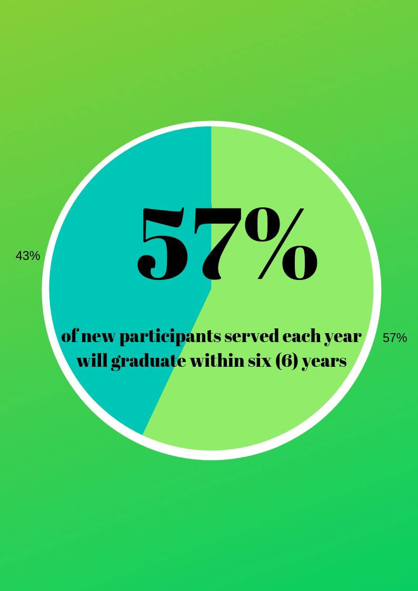

University of North Texas
University of North Texas
University of North Texas
University of North Texas
Student Support Services (SSS) exists to serve, support, and inspire current college students "to soar" their maximum collegiate potential
Advisors can be reached via email or Zoom. You can utilize the UNT Zoom service to meet with an advisor through video or audio (microphone) calls.
Be sure to contact your advisor so they can schedule all virtual meeting requests. You can contact our main office at triosss@unt.edu or 940-565-4754
Justin Persick: justin.persick@unt.edu
Anthony Vazquez: anthony.vazquez@unt.edu
Link with instructions to use Zoom: https://online.unt.edu/zoom-basics
Access UNT Zoom here: https://unt.zoom.us/
Student Support Services (SSS), funded by the U.S. Department of Education, is a TRIO program dedicated to increasing the retention and graduation rates for low-income, first-generation, and/or current undergraduate students with documented disablities at the University of North Texas.
Face your challenges head-on. Be an Eagles!
Student Support Services (SSS) exists to serve, support, and inspire students "to soar" to their maximum collegiate potential.
The Student Support Services (SSS) program at the University of North Texas is devoted to providing timely, student-centered programming to increase the academic success, retention, and graduation rates of SSS students. This mission is accomplished by providing a purposeful set of comprehensive services to support the individual students' academic, personal, and financial needs at UNT.
The Student Support Services program at UNT will beet the following grant objectives:
This grant has been 100% federally funded by the United States Department of Education to serve 258 participants annually in the amount of $354,417.00 per year for a period of five years.
Tweets by triosssunt